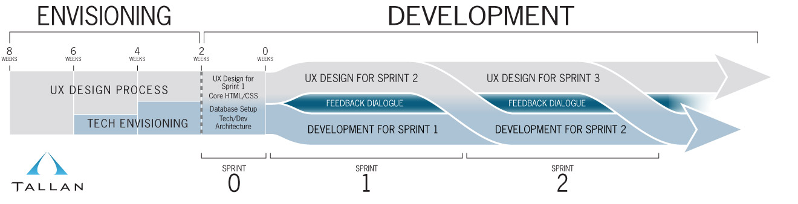
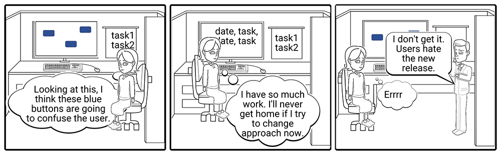
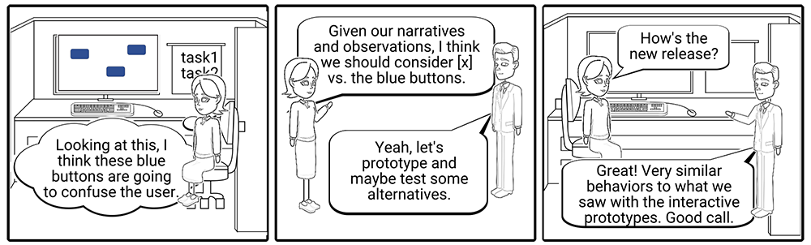

Five core components of UX
- Information Architecture (IA)
- Interaction Design
- Usability
- Share/test/feedback
- Prototyping
- Visual Design
Generic UX Design Workflow
- Concept, brainstorm, gather info
- Wireframe/Design
- Prototype
- Share/test/feedback
- Iterate
- Build
Design Thinking
1. Finding the right problem first
- A project often begins with objectives that are actually solutions
- We need to step out of these outcome assumptions, and start by uncovering the real problems, their root causes, and how people currently deal with them
2. Divergent & convergent thinking
- The design thinking process is ultimately a divergent and convergent thinking process
- understand people and their problems, and then translate findings into one or a few problem statements
- To find the best solution, a cross-disciplinary group first brainstorm a variety of potential solutions
- Through evaluation, comparison, and consolidation, a limited number of solutions are selected for prototyping and testing
3. Iterative process
- There are no perfect solutions, only trade-offs. Iterations are indispensable. Prototyping and testing uncover the issues and gaps in the initial solution, and drive design thinkers to make refinements or develop new solutions. In this process, design thinkers learn more about the audience and may go back to redefine the problems.
Waterfall
Limitations of Waterfall in Openapp:
- Client frequently doesn't know or can't articulate what they want
- We often jumped straight to Develop as a Surrogate for Discover meaning:
- A Developer is tied up coding for longer as some of his work is on the wrong solution
- There is scar tissue from Developing the wrong Design and it never gets fixed
- The parameters of the spec are not sketched out early in the project and this leads to issues late in the project timeframe as some Client expectations are not being met
- Some of the original spec will prove to be irrelevent as more is discovered in the Development of the project
Agile
Potential advantages of using Agile in Openapp
- We can begin Development without a well developed spec (value test before large commitment)
- We can Discover what the Client wants through Client and Team Collaboration
- We can define the outer Parameters of the entire project as User Stories (not detail specs), leading to less variance on expectations late in projects
- We have a mechanism for changing direction and making use of new knowledge to maximise business value
Agile
Potential dangers of using Agile in Openapp
- We accept the lack of requirement Definition without properly harnessing Collaboration / Conversation to gain the knowledge we need
- Or we continue to deeply spec upfront (like Waterfall) and organise the project around Scrum - one clashes with the other and we can end up with disadvantages of both
- With no fixed place for Design it gets squeezed out between a high spec (no freedom) and tight schedule (no time)
How we should employ Agile?
- Pragmatically - some projects/components will have a need for alot of Documentation, some won't. Ditto Design innovation etc. Ruthless distinction is paramount
- We should formalise better to improve communication within the Team - we should all have predictable access to updated Project spec docs which give a good summary of most improvement aspects of project
- Projects should have a period of Discovery before first Development Scrums begin
How we should employ Agile?
- These Conversations should be led by User Stories even if this needs to be followed up by a fully formed and signed off spec. In the absence of Personas, Interviews and proper User testing - the Stories will at least encourage some User empathy and encourage Outcome over Output
- This type of Sprint 0 should also be considered for necessary technical requirements that don't necessarily benefit from some aspects of the Agile process. UI Designer may have little us in a discussion about database setup.
How we should employ Agile?

Agile Manifesto
4 Values
- Individuals & Interactions Over Processes & Tools
- Working Software Over Comprehensive Documentation
- Customer Collaboration Over Contract Negotiation
- Responding to Change Over Following a Plan
Agile Methodology
3 Focal Points
- Focus on the Individual with testable narratives
- Frontload Value
- Promote Outcomes (does it help user) rather than Output (quantity of software)
1. Output rather than Outcomes

2. Outcomes rather than Output

User Stories
User Stories should never be Specs - they should be small enough to fit on a Card, should primarily drive a Collaboration (Conversation) and be verifiable through Confirmation. If additional Specs are required these should be written after a suitable amount of Collaboration has taken place.
- As a "User" (Persona better still)
- I want to "Do Something"
- To "Derive a Reward"
User Stories - Project Planning
An advantage of user stories is that they can be used readily in project planning for the following reasons;
- They are written so that each can be given an estimate of how difficult or time–consuming it will be to develop
- Are implemented in a single iteration of an agile project
- Easier to prioritise than a "The system shall..."
- They can be written quickly to sketch out the overall parameters of a project without having to contain specific details yet to be worked out
User Stories are not Use Cases
A Use case is a generalised description of a set of interactions between the system and one or more actors, where an actor is either a user or another system.
- they are less limited in scope - this means they are extensive, but less manageable in project planning - they often span iterations
- Use cases are more prone to including details of the ui - focusing too early on the software implementation rather than on business goals - to its detriment
- the purpose of the Use case is to document an agreement between the customer and the development team
- User stories are written to facilitate release and iteration planning, and to serve as placeholders for conversations about the users’ detailed needs (pre agreement)
- Use case briefs are intended to live on for the life of a product, User Stories are discarded after use
- Use cases are generally written as the result of an analysis activity , while User stories are written as notes that can be used to initiate analysis conversations
Spec for Shire dashboard
The conversation with the client frequently takes the form of the type of document below. This tends to result in an Output - frequently a list or table which while fullfilling an agreed spec doesn't truly address the requirements of the user.
=
Spec for Shire dashboard
At a guess - I worked from the premise that a typical User might want to see any correlation between drug prescription, compliance and patient well being. This should be framed as a User Story so the Who, What and Why are obvious to all stakeholders.
Personas
For CFRI / Tracker project - having focussed on the details of a set of fields little thought has been given to who will be using the system long term and what the likely obstacles to up-take will be
A result of this has left us designing for a Registry, when many of our users are expecting a tool to help with Clinical work
Clinical Research Associate Barry
38 years old - has extensive exprience with registry database systems. Barry is very familier with the potential advantages of having an extensive database available for research purposes and has created a initial Registry dataset from filling in Patients information from the previously existing Clinical tool in Beaumont hostpital
Radiologist Susan
27 years old. Susan is quite computer literate and enjoys being able to record the Encounter details of her CF Patients in the basic Clinical System in Beaumont hospital. She welcomes the idea of moving to a new more sophisticated tool to replace the system she has been working with but is expecting it to work as an aid to her Clinical work as well as acting as a Registry
Radiologist Mary
52 years old. Based in Crumlin Hospital Mary fills in the sections of a the CF Encounter form in paper. She has heard her colleagues talking about Computerised Clincial Systems in Beaumont, but really doesn't think she will have time to fill the forms in twice
INVEST
The INVEST mnemonic as a reminder of the characteristics of a good quality Product Backlog Item (commonly written in user story format)
- Independent - should be self-contained, in a way that there is no inherent dependency on another PBI.
- Negotiable - not explicit contracts and should leave space for discussion.
- Valuable - A PBI must deliver value to the stakeholders.
- Estimable - You must always be able to estimate the size of a PBI.
- Small - PBIs should not be so big as to become impossible to plan/task/prioritize with a certain level of accuracy.
- Testable - The PBI or its related description must provide the necessary information to make test development possible.
Glossary
- Epic - Large User Story usually holding group of smaller User Stories
- User Story - Unit of work defined form the point of view of Who, What & Why, intended to promote discussion and collaboration
- (Sub) Task - One of the Chunks of work required to allow User Story to happen - Frequently done by one individual (database, bit of UI, etc.) and not of business value on its own
- INVEST - stands for a set of criteria used to assess the quality of a user story. If the story fails to meet one of these criteria, the team may want to reword it.
- Personas - synthetic biographies of fictitious users of the future product.
- Three C's - "Card, Conversation, Confirmation" is a formula that captures the components of a User Story.
- -